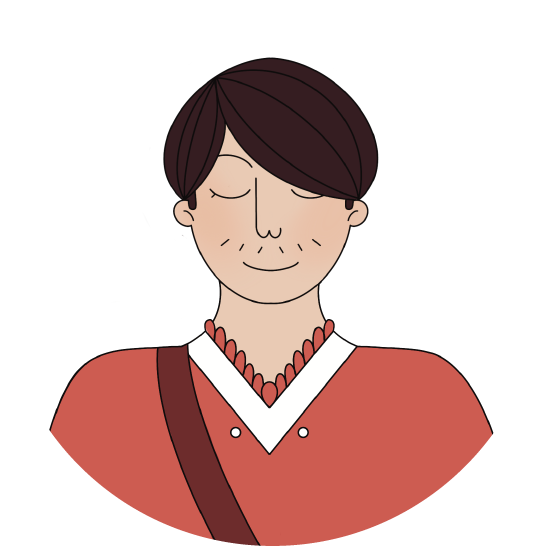
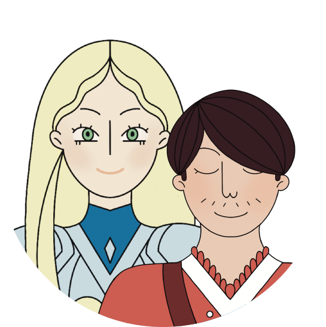
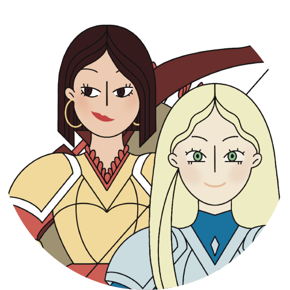

FAITES VOTRE CHOIX


Le binôme qui se complète,
Elisabeth et Gaspard retournent sur l’autre rive.

Le page le plus réfléchi,
Gaspard, retourne sur l’autre rive tout seul.

La chevalière Alessandra
et le page Gaspard retournent sur l’autre rive.

Les courageuses chevalières Elisabeth
et Alessandra retournent ensemble sur l’autre rive.